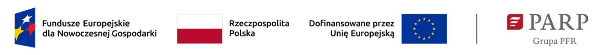

About the project we are running
BikeRC Prosta Spółka Akcyjna is carrying out the project “System Analityczny Biomechaniki Sportowców (SABAS)” (Athlete Biomechanics Analytics System), funding agreement no. 16/I/FENG/PCI/2025, under the European Funds for a Modern Economy 2021–2027 programme (FENG), Priority II “An innovation-friendly environment”, Measure 2.28 Startup Booster Poland.
EU funding for the project
PLN 199,620.80
Total project valuePLN 222,988.80
Eligible expenditurePLN 199,620.80
Developing, testing and launching an innovative system for monitoring the biomechanics of athletes' movement.
Testing the system prototype with friendly testers and verifying how it works in real training conditions.
Developing the user interface and running functional and operational tests with the first external partners.
Promotional activities supporting the launch, including marketing campaigns and cooperation with selected clubs and athletes.
Individual customers – people who do sport (cyclists in particular).
Sports clubs, in particular cycling clubs, and bike shops.
Sports facilities: gyms, fitness clubs, rehabilitation centres.
Potentially: the research community and health centres.
Bringing to the wider market an innovative tool for monitoring and analysing movement biomechanics in real time.
Lowering the cost of professional motion analytics and making the technology available to amateurs as well.
Improving the chances of correct training, injury prevention and effective rehabilitation thanks to objective, repeatable measurements.
Commercial launch of the SABAS system – an easily accessible tool for monitoring and analysing movement.
Growth of a Polish innovation on the domestic and international market (particularly in the sports and rehabilitation sectors).
Reference biomechanical models built from data collected while working with outstanding athletes.
New features and expansion into further markets (fitness, gyms, health centres).
Greater recognition of the BikeRC brand and the transfer of Polish technology to foreign markets.